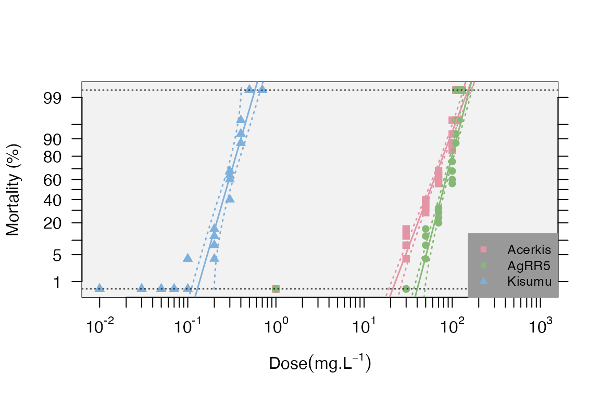

An R package for analyses of bioassays and probit graphs
Piyal Karunarathne, Nicolas Pocquet, Pascal Milesi, and Pierrick Labbé
This package is designed to analyze mortality data from bioassays of one or several strains/lines/populations. As of now, the functions in the package allow adjusting for mortality in the controls with Abott’s correction. For each strain, functions are available to generate a mortality-dose regression using a generalized linear model (which takes over-dispersion into account and allow mortality of 0 or 1), and plot the regressions with or without the desired confidence interval (e.g. 95%).
The package also provides functions to test the linearity of the log-dose response using a chi-square test between model predictions and observed data (significant deviations from linearity may reflect mixed populations for example).
The package also allows determining the lethal doses for 25%, 50% and 95% of the population (LD25, LD50 and LD95 respectively) or the level as specified by the user, with their 95% confidence intervals (CI) and variance of each (e.g., LD25var, LD50var, etc.), following Johnson et al. 2013 approach, which allows taking the heterogeneity of the data into account (Finney 1971) to calculate the CI (i.e. a larger heterogeneity will increase the CI).
The methods implemented here use likelihood ratio tests (LRT) to test for differences in resistance levels among different strains. Finally, resistance ratios (RR) at LD25, LD50 and LD95, i.e. the LD ratios between a given strain and the strain with the lowest LD50 (or LD25,LD50, and LD95; usually it is the susceptible reference), with their 95% confidence intervals are calculated according to Robertson and Preisler (1992).
- Installing
BioRssay
#1. CRAN version
install.packages("BioRssay")
#2. Developmental version
if (!requireNamespace("devtools", quietly = TRUE))
install.packages("devtools")
devtools::install_github("milesilab/BioRssay", build_vignettes = TRUE)1. DATA PREPARATION
BioRssay can import data in any format that is compatible with base R data import functions (e.g. read.table, read.csv). However, for the functions in BioRssay to work, the data must have at least the following columns (other columns won’t be used, but are no hindrance).
- strain: a column containing the strains tested
- dose: dosage tested on each strain/sample (controls should be entered as 0)
- total: total number of samples tested
- dead: number of dead (or knock down) samples
See the examples below.
Example 1
data(bioassay)
head(bioassay$assay2)
#> insecticide strain dose total dead replicate date
#> 1 temephos KIS-ref 0.000 100 1 1 26/01/11
#> 2 temephos KIS-ref 0.002 97 47 1 26/01/11
#> 3 temephos KIS-ref 0.003 96 68 1 26/01/11
#> 4 temephos KIS-ref 0.004 98 89 1 26/01/11
#> 5 temephos KIS-ref 0.005 95 90 1 26/01/11
#> 6 temephos KIS-ref 0.007 99 97 1 26/01/11Also download the test data at https://github.com/milesilab/DATA/blob/main/BioAssays/Test.BioRssay.txt and find more example data sets at https://github.com/milesilab/DATA/tree/main/BioAssays
Example 2
file <- paste0(path.package("BioRssay"), "/Test.BioRssay.txt")
test<-read.table(file,header=TRUE)
head(test)
#> insecticide strain dose total dead
#> 1 bendiocarb Kisumu 0.00 25 0
#> 2 bendiocarb Kisumu 0.00 25 0
#> 3 bendiocarb Kisumu 0.00 25 0
#> 4 bendiocarb Kisumu 0.00 25 0
#> 5 bendiocarb Kisumu 0.01 25 0
#> 6 bendiocarb Kisumu 0.01 25 0NOTE: It is also possible to include a reference strain/population with the suffix “ref” in the strain column (see example 1), or the reference strain can be specified later in the function resist.ratio to obtain the resistance ratios for each strain (see below).
2. Analysis
The workflow is only succinctly described here, for more information on the functions and their options, see individual one in the reference index.
Example 1
Let’s have a quick look at the data again.
assays<-bioassay
exm1<-assays$assay2
head(exm1)
#> insecticide strain dose total dead replicate date
#> 1 temephos KIS-ref 0.000 100 1 1 26/01/11
#> 2 temephos KIS-ref 0.002 97 47 1 26/01/11
#> 3 temephos KIS-ref 0.003 96 68 1 26/01/11
#> 4 temephos KIS-ref 0.004 98 89 1 26/01/11
#> 5 temephos KIS-ref 0.005 95 90 1 26/01/11
#> 6 temephos KIS-ref 0.007 99 97 1 26/01/11
unique(as.character(exm1$strain))
#> [1] "KIS-ref" "DZOU" "DZOU2"This example contains the mortality data of three strains (KIS-ref, DZOU, and DZOU2 ); KIS is used as the reference, as indicated by the “ref” suffix.
The first step is to check whether the controls have a non-negligible mortality, in which case a correction should be applied to the data, before probit transformation. This is easily achieved with the function probit.trans().
dataT<-probit.trans(exm1) #additionally an acceptable threshold for controls' mortality can be set as desired with "conf="; default is 0.05.
dataT$convrg
#> NULL
head(dataT$tr.data)
#> insecticide strain dose total dead replicate date mort probmort
#> 2 temephos KIS-ref 0.002 97 47 1 26/01/11 0.4845361 -0.0387720
#> 3 temephos KIS-ref 0.003 96 68 1 26/01/11 0.7083333 0.5485223
#> 4 temephos KIS-ref 0.004 98 89 1 26/01/11 0.9081633 1.3295291
#> 5 temephos KIS-ref 0.005 95 90 1 26/01/11 0.9473684 1.6198563
#> 6 temephos KIS-ref 0.007 99 97 1 26/01/11 0.9797980 2.0495943
#> 7 temephos KIS-ref 0.010 99 99 1 26/01/11 0.9940000 2.5121443The output of probit.trans is a list of which the first element (convrg) contains the results of Abott’s correction and convergence values.
However, since the mortality in the controls (dose=0) is below 5% (conf=0.05) in the present example, data$convrg is NULL and thus no correction is applied to the data . The second element of the list dataT is the probid transformed data with two additional columns: mort, the observed mortalities, and probmort, the observed probit-transformed mortalities. This data frame is what we’ll use in the next steps of the analysis.
If you set the threshold to conf=0.01 with example 1, you can assess the effects of the Abbot’s correction: all mortalities are slightly reduced to take the base control mortality into account.
The second step is to compute the lethal dose values (25%, 50% and 95%, LD25, LD50 and LD95 respectively) and the corresponding resistance ratios. The function resist.ratio allows you to do just that (user also has the option to calculate these values for different LD values). If no reference strain has been specified in the data file (using the suffix “ref” as mentioned above), it can be specified in ref.strain=. Otherwise, the strain with the lowest LD50 will be considered as such. By default, the LDs’ 95% confidence intervals are computed (the min and max values are reported); you can adjust this using conf.level=.
data<-dataT$tr.data #probid transformed data
RR<-resist.ratio(data)
RR
#> Slope SlopeSE Intercept InterceptSE h g Chi2 df Chi(p) LD25
#> DZOU 1.75 0.1537 3.72 0.3579 1.91 0.0397 9.88 10 0.4514 0.0030
#> DZOU2 1.69 0.1657 3.74 0.3907 2.33 0.0490 9.92 10 0.4473 0.0025
#> KIS-ref 3.17 0.3812 8.95 0.9849 3.26 0.0716 8.59 11 0.6597 0.0009
#> LD25min LD25max LD50 LD50min LD50max LD95 LD95min LD95max rr25
#> DZOU 2e-04 0.0192 0.0074 6e-04 0.0404 0.0645 0.0087 0.2472 3.24
#> DZOU2 1e-04 0.0194 0.0062 3e-04 0.0412 0.0576 0.0055 0.2578 2.64
#> KIS-ref 0e+00 0.0142 0.0015 0e+00 0.0209 0.0050 0.0001 0.0537 1.00
#> rr25min rr25max rr50 rr50min rr50max rr95 rr95min rr95max
#> DZOU 2.7000 3.91 4.84 4.1600 5.64 13 7.6800 22.00
#> DZOU2 2.1900 3.18 4.05 3.5000 4.69 11 7.1100 19.00
#> KIS-ref 0.7947 1.26 1.00 0.8488 1.18 1 0.8085 1.24Note that we did not specify the reference strain here as it is already labeled in the data
For each strain, you have first the LD25, LD50 and LD95 and their upper and lower limits (defaults is 95% CI), then the slope and intercept of the regression (with their standard error), the heterogeneity (h) and the g factor (“With almost all good sets of data, g will be substantially smaller than 1.0 and seldom greater than 0.4.” Finney, 1971).
The result of the chi test (Chi(p)) is then indicated to judge whether the data follow a linear regression: here all the p-values are over 0.05 so the fits are acceptable. Finally the resistance ratios are indicated for LD25, LD50 and LD95 (RR25, RR50 and RR95), as well as their upper and lower limits.
The third step, when analyzing more than one strain, is now to test for difference in dose-mortality responses between strains using the model.signif() function.
model.signif(dataT$tr.data)
#> Analysis of Deviance Table
#>
#> Model 1: mortality ~ log10(data$dose)
#> Model 2: mortality ~ log10(data$dose) * data$strain
#> Resid. Df Resid. Dev Df Deviance Pr(>Chi)
#> 1 32 936.46
#> 2 28 70.69 4 865.77 < 2.2e-16 ***
#> ---
#> Signif. codes: 0 '***' 0.001 '**' 0.01 '*' 0.05 '.' 0.1 ' ' 1
#> complete model is significant against a NULL model
#> continueing to pair-wise comparison
#> Output details
#> model.pval - significance value of ANOVA on the binomial GLM test of the strain pair
#> bonferroni - significance of the model.pval with bonferroni correction
#> res.Dv - residual deviance
#> thr - threshold for the significance of the pvalue
#> str - values for the strains
#> int - values for the interaction between the strain and the dose
#>
#> $model
#> strain1 strain2 model.pval bonferroni res.Dv.Null res.Dv.str res.Dv.int
#> 1 DZOU DZOU2 0.26402 non-sig NA NA NA
#> 2 DZOU KIS-ref 0 sig 1150.41 87.892 49.747
#> 3 DZOU2 KIS-ref 0 sig 1064.79 95.043 53.537
#> str.pval str.thr int.pval int.thr
#> 1 NA NA NA NA
#> 2 0 0.01250 0.001 0.025
#> 3 0 0.01667 0.001 0.050As there are 3 strains, the function first tests whether all strains are similar (i.e. equivalent to 1 strain) or not (i.e. at least one is different from others), using a likelihood ratio test. Here, the test is highly significant, some strains are thus different in terms of dose response.
Pairwise tests are then performed and reported below. Here, the KIS strain is different from DZOU and from DZOU2 strains (model.pval <0.05). DZOU and DZOU2 are not different (model.pval >0.05). The bonferroni column indicates whether the p-values <0.05 remain significant (sig vs non-sig) after correction for multiple testing.
Further, the function outputs seven more columns with statistical outputs from the model evaluation between strains and strain-dose to a null model. The abbreviations are as follows:res.Dv - residual deviancethr - threshold for the significance of the pvaluestr - values for the strainsint - values for the interaction between the strain and the dose
Note: the pvalues for strain and strain-dose interaction is from a F-test for a binomial model.
Data Visualization The data and the regression can be plotted with confidence levels using the mort.plot() function. It is also possible to take the validity of the linearity test into account for the plots using the test.validity= option. The probit-transformed mortalities (probit.trans() function) are plotted as a function of the log10 of the doses.
strains<-levels(data$strain)
par(mfrow=c(1,2)) # set plot rows
# plot without confidence intervals and test of validity of the model
mort.plot(data,plot.conf=FALSE,test.validity=FALSE)
# plot only the regression lines
mort.plot(data,plot.conf=FALSE,test.validity=FALSE,pch=NA) 
# same plots with confidence level
par(mfrow=c(1,2))
mort.plot(data,plot.conf=TRUE,test.validity=FALSE)
mort.plot(data,plot.conf=TRUE,test.validity=FALSE,pch=NA)It is also possible to plot different confidence intervals with the conf.level= option (the default is 0.95). It is possible to plot only a subset of strains using the strains= option to list the desired strains; if not provided, all the strains will be plotted.
Note that the plots can be generated directly from the “resist.ratio” function using the plot=TRUE option.
Example 2
We follow the same workflow (using the plot option in resist.ratio()). However, there are more than one insecticide tested in this experiment. Therefore, we need to subset the data for each insecticide, and carry out the analysis as before.
head(test)
#> insecticide strain dose total dead
#> 1 bendiocarb Kisumu 0.00 25 0
#> 2 bendiocarb Kisumu 0.00 25 0
#> 3 bendiocarb Kisumu 0.00 25 0
#> 4 bendiocarb Kisumu 0.00 25 0
#> 5 bendiocarb Kisumu 0.01 25 0
#> 6 bendiocarb Kisumu 0.01 25 0
unique(test$insecticide)
#> [1] "bendiocarb" "chlorpyrifos-metyl" "permethrin"
bend<-test[test$insecticide=="bendiocarb",]
head(bend)
#> insecticide strain dose total dead
#> 1 bendiocarb Kisumu 0.00 25 0
#> 2 bendiocarb Kisumu 0.00 25 0
#> 3 bendiocarb Kisumu 0.00 25 0
#> 4 bendiocarb Kisumu 0.00 25 0
#> 5 bendiocarb Kisumu 0.01 25 0
#> 6 bendiocarb Kisumu 0.01 25 0We will use a subset of the data for the insecticide “bendiocarb” only.
dataT.b<-probit.trans(bend)
data.b<-dataT.b$tr.data
RR.b<-resist.ratio(data.b,plot = T,ref.strain = "Kisumu",plot.conf = T, test.validity = T)
head(RR.b)
#> Slope SlopeSE Intercept InterceptSE h g Chi2 df Chi(p) LD25
#> Acerkis 5.88 0.3656 -10.2992 0.6734 1.00 0.0149 11.00 31 0.9997 43.0000
#> AgRR5 8.52 0.6962 -16.1686 1.3600 1.61 0.0279 18.00 31 0.9716 66.0000
#> Kisumu 7.69 0.6055 4.3400 0.3282 1.00 0.0238 7.34 39 1.0000 0.2228
#> LD25min LD25max LD50 LD50min LD50max LD95 LD95min LD95max rr25
#> Acerkis 18.0000 132.000 57.0000 23.000 178.0000 108.0000 41.0000 371.0000 195
#> AgRR5 19.0000 376.000 79.0000 22.000 468.0000 123.0000 33.0000 798.0000 296
#> Kisumu 0.1355 0.321 0.2726 0.172 0.3824 0.4461 0.3077 0.5862 1
#> rr25min rr25max rr50 rr50min rr50max rr95 rr95min rr95max
#> Acerkis 86.0000 442.00 207 103.0000 418.0 241 43.0000 1360
#> AgRR5 131.0000 666.00 290 144.0000 583.0 277 49.0000 1560
#> Kisumu 0.3352 2.98 1 0.3849 2.6 1 0.0884 11Note that we have enabled the arguments “plot=” with “plot.conf=” and test.validity=. When the log-dose-response is not linear for a strain (Chi-square p-value < 0.05), it will be plotted without forcing linearity as for “Acerkis or AgRR5” strains in this example.
#To then test the difference in dose-mortality response between the strains
t.models<-model.signif(data.b)
#> Analysis of Deviance Table
#>
#> Model 1: mortality ~ log10(data$dose)
#> Model 2: mortality ~ log10(data$dose) * data$strain
#> Resid. Df Resid. Dev Df Deviance Pr(>Chi)
#> 1 102 1981.5
#> 2 98 107.8 4 1873.7 < 2.2e-16 ***
#> ---
#> Signif. codes: 0 '***' 0.001 '**' 0.01 '*' 0.05 '.' 0.1 ' ' 1
#> complete model is significant against a NULL model
#> continueing to pair-wise comparison
#> Output details
#> model.pval - significance value of ANOVA on the binomial GLM test of the strain pair
#> bonferroni - significance of the model.pval with bonferroni correction
#> res.Dv - residual deviance
#> thr - threshold for the significance of the pvalue
#> str - values for the strains
#> int - values for the interaction between the strain and the dose
#>
t.models
#> $model
#> strain1 strain2 model.pval bonferroni res.Dv.Null res.Dv.str res.Dv.int
#> 1 Acerkis AgRR5 0 sig 1437.16 94.149 76.989
#> 2 Acerkis Kisumu 0 sig 1824.23 66.860 59.425
#> 3 AgRR5 Kisumu 0 sig 1822.46 80.266 79.193
#> str.pval str.thr int.pval int.thr
#> 1 0 0.00833 0.000 0.01667
#> 2 0 0.01000 0.145 0.02500
#> 3 0 0.01250 0.594 0.05000Note that at least one of the strains failed the linearity test, the validity of the pairwise dose-mortality response test is, at best, highly questionable. We do not recommend it.
If many strains are present and only one (few) fails the linearity tests, we do recommend users to remove specific strains from the analyses.
These steps can be repeated for the different insecticides, either one by one or or in a loop (e.g. “for” loop function).
Example 3
file <- paste0(path.package("BioRssay"), "/Example3.txt") #import the example file from the package
exm3<-read.table(file,header=TRUE)
trnd<-probit.trans(exm3) #probit transformation and correction of data
resist.ratio(trnd$tr.data,LD.value = c(50,95),plot = T) #get LD and RR values with the mortality plot#> Slope SlopeSE Intercept InterceptSE h g Chi2 df Chi(p) LD50
#> DZOU 1.64 0.1857 3.77 0.4515 7.94 0.0579 61 17 0.000 0.0050
#> KIS 3.46 0.2648 9.64 0.7206 3.09 0.0279 14 13 0.358 0.0016
#> LD50min LD50max LD95 LD95min LD95max rr50 rr50min rr50max rr95 rr95min
#> DZOU 2e-04 0.0408 0.0504 0.0034 0.2650 3.07 2.7700 3.40 10 7.6200
#> KIS 1e-04 0.0099 0.0048 0.0005 0.0254 1.00 0.8991 1.11 1 0.8157
#> rr95max
#> DZOU 14.00
#> KIS 1.23
model.signif(trnd$tr.data) # test the models significance for each strain
#> Output details
#> model.pval - significance value of ANOVA on the binomial GLM test of the strain pair
#> bonferroni - significance of the model.pval with bonferroni correction
#> res.Dv - residual deviance
#> thr - threshold for the significance of the pvalue
#> str - values for the strains
#> int - values for the interaction between the strain and the dose
#>
#> $model
#> $model$pairT
#> Analysis of Deviance Table
#>
#> Model 1: mortality ~ log10(data$dose)
#> Model 2: mortality ~ log10(data$dose) * data$strain
#> Resid. Df Resid. Dev Df Deviance Pr(>Chi)
#> 1 30 703.60
#> 2 28 164.17 2 539.43 < 2.2e-16 ***
#> ---
#> Signif. codes: 0 '***' 0.001 '**' 0.01 '*' 0.05 '.' 0.1 ' ' 1
#>
#> $model$fullM
#> Df Deviance Resid. Df Resid. Dev F
#> NULL NA NA 31 1839.6531 NA
#> log10(data$dose) 1 1136.0509 30 703.6021 225.62945
#> data$strain 1 404.0593 29 299.5428 80.24964
#> log10(data$dose):data$strain 1 135.3709 28 164.1719 26.88581
#> Pr(>F)
#> NULL NA
#> log10(data$dose) 6.302655e-15
#> data$strain 1.029903e-09
#> log10(data$dose):data$strain 1.671886e-053. REFERENCES
Finney DJ(1971). Probitanalysis. Cambridge:Cambridge UniversityPress. 350p.
HommelG(1988). A stage wise rejective multiple test procedure based on a modified Bonferroni test. Biometrika 75, 383-6.
Johnson RM, Dahlgren L, Siegfried BD,EllisMD(2013). Acaricide,fungicide and druginteractions in honeybees (Apis mellifera). PLoSONE8(1): e54092.
Robertson, J. L., and H.K. Preisler.1992. Pesticide bioassays with arthropods. CRC, Boca Raton, FL.